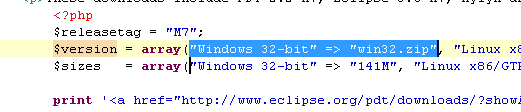

Here are some of the more noteworthy things available in
milestone build RC1 (May 21, 2010) which is now available for download.
See the build
notes for details about bugs fixed and other changes.
PHP Development Tools
|
| New templated
'Content Assist' |
Applying conent assist proposals to
editor creates a templated expression that provides arguments
completion according to the declaration of the method. Optional
arguments are let out of the template. This feature helps developers
to quickly edit their method parameters.
|
|
| New Editor
Syntax Coloring Scheme |
Reset the editor syntax coloring
scheme for PHP content. People are used to the plain style provided
usually by Eclipse projects, in this release PDT is aligned with all
other Eclipse standards.
|
|
| New advanced
syntax coloring rules |
Several rules are configurable
through the Preferences > PHP > Editor > Syntax
Coloring: Full list of rules is available here
|
|
| New content
assist in PHPDoc block |
Conent assist provides proposals for
the @return, @see, @throw phpdoc tags
|
|
| New show
inherited members in quick outline view |
Quick outline includes a "show
inherited members" mode which lists all methods inherited by super
types.

|
|
| New more
informative hover information |
Richer information is now provided
in the hover information tool tip for methods, types and other
elements.
|
|
| New Drag and
Drop in PHP/JavaScript Editors |
PHP Editors are now powered by a
drag and drop bhavior that enables developer to select a block of code
and move it across lines

|
|
| New Powerfull
PHP Search Dialog |
Enable powerful php search of
elements such as types and methods references / declarations. This is
usefule when reviewing code or just for any type browsing tasks
|
|
| New Eclipse
Marketplace |
An Eclipse-based Marketplace, this
feature provides a nice interface for http://marketplace.eclipse.org/
Eclipse Marketplace offers the Eclipse community a convenient,
information-rich portal that helps software developers find open
source and commerical plugins.
|
|
| Browser can use
WebKitGTK+ |
Linux users can now use WebKitGTK+ instead of Mozilla as the
Browser control's native renderer. See Can
the Browser use the WebKit renderer on GTK?.

|
|
| Quick Access now
shows keybindings for commands |
Quick Access (Ctrl+3) now shows
keybindings for commands so you can save yourself from all that typing
and just use the keyboard shortcut the next time you need to run a
command.

|
|
| New features in
Open Resource dialog |
The Open Resource dialog
supports three new features:
- Path patterns: If the pattern contains a /, the part
before the last / is used to match a path in the workspace:

- Relative paths: For example, "./T" matches all files
starting with T in the folder of the active editor or selection:

- Closer items on top: If the pattern matches many
files with the same name, the files that are closer to the currently
edited or selected resource are shown on top of the matching items
list.

|
|
| Apply patch in
Synchronize view preference |
Thanks to the new preference Apply
patch in Synchronize view, you can leverage the new way of working
with patches each time you apply one. When set, applying a patch via
the Team context menu or by pasting in Package Explorer
uses the Synchronize view.

|
|
| Ignore Leading
Path Segments option |
A new option helps apply patches
with non-matching paths in the Synchronize view. This is the
last option needed to bring patching in the Synchronize view up
to par with the Apply Patch dialog.

|
|
| Warning about
possible inaccuracy in comparison result |
The compare framework caps the
result accuracy for large files. This used to happen silently, which
confused users. Now when the faster algorithm is used a warning label
appears.

|
|
| Enhanced Open in
Compare editor menu |
The context menu of the Compare
editor contains Open and Open With actions, which open
the file in full-fledged editors. Now, these actions set the selection
and the caret position in the newly opened editor based on the
selection in Compare Editor.

|
|
| File system
import wizard |
The file system import wizard now
supports creating virtual folders and linked files and folders.

Linked files and folders can also be created relative to a path
variable.
|
|
The above features are just the ones that are new since the
previous milestone build. Summaries for earlier 3.6 milestone builds: